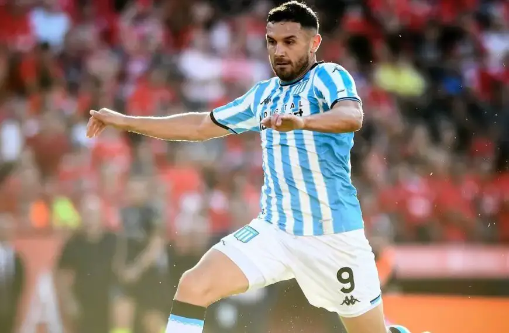

Racing lo hizo otra vez. Una nueva e ingeniosa campaña de
concientización tiene como protagonista a la entidad de Avellaneda.
Es que desde las redes sociales de la Academia le pusieron fin a tanto
misterio por el error que mostraba su escudo desde hace varias semanas
y que tenía que ver con generar conciencia sobre la detección temprana
del cáncer testicular

Con un golazo de Maravilla Martínez, Racing le ganó a Independiente y se quedó con el clásico de
Avellaneda,A los 17 minutos del segundo tiempo, la Academia recuperó en campo propio, pero la tenencia
se convirtió en un ataque cuando Juanfer Quintero salteó una línea con un pase a Bruno Zuculini, quien
recibió y,
sin controlar el balón, le metió un tremendo pase frontal a Martínez.
Racing Club fue uno de los clubes que más y mejor se reforzó
en este mercado de pases, que contará con una semana más hasta
el cierre. A pocas horas de su debut en la Copa de la Liga,
la Academia decidió volcar en sus redes sociales un video con
la presentación de sus ocho refuerzos, más la llegada del
histórico entrenador Gustavo Costas.
Racing visita a Independiente este sábado desde las 17 en una nueva edición
del clásico de Avellaneda. En la previa del partido, más de 20 mil hinchas
de la Academia coparon el Estadio Presidente Perón para brindarle su apoyo al equipo.
Tal como anticipamos el martes 20 de febrero, Facundo Mura se metió dentro de los XI en la primera
prueba futbolística.
El lateral derecho ocupó el lugar de Santiago Solari, y cumplió la misma función que tuvo en la
goleada de #RACING ante #Newells.